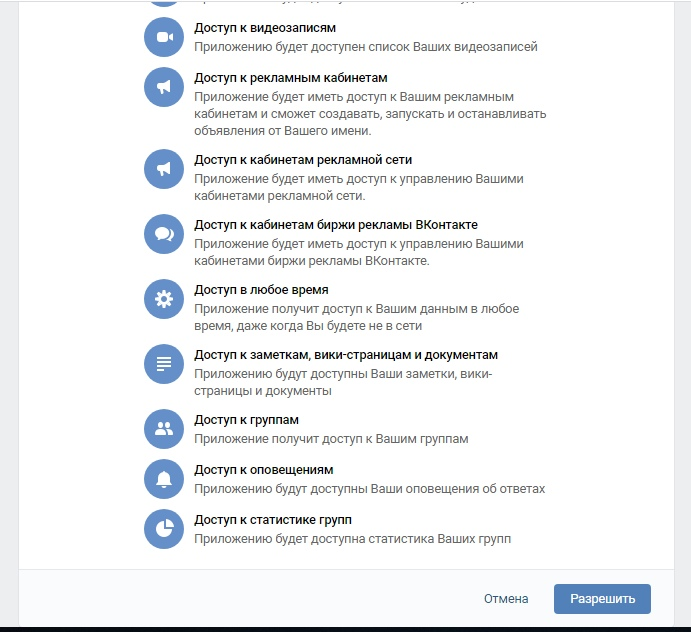
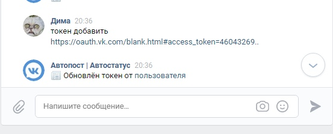

Актуальная информация об автопосте
Моментальная подписка на сообщество без заявок и ожиданий
Функции: автоматическая отправка сообщений в личные сообщения пользователям сайта или сообщества, беседы, отправка постов, комментариев и даже смена статуса на странице. В текст можно вставлять различные переменные, преобразовывать цифры в тексте в смайлы, отправлять стикеры, управлять другими страницами не находясь на них и многое многое другое!
Описание всех возможностей и функций
Начало: авторизация
Для начала напишите в ЛС сообществу. После вам для работы с ботом будет необходимо дать ему токен, что бы он смог выполнять ваши задания.
Давайте получим токен тут.

Нажмите внизу страницы кнопку "Разрешить", после откроется страница. Копируйте на неё ссылку.

Теперь напишем в ЛС сообщества команду "Добавить токен <вставляем ссылку>".
Готово! Автопост добавил/обновил ваш токен и значит мы можем создавать первые задания.
Начало: первые информационные команды
Инфа
Выводит информацию о наличии VIP
Токены
Выводит информацию о подключенных страницах
Кнопки
Выводит клавиатуру для удобного вызова команд
Основа: задания
Задания
Выводит все задания
Задание <номер>
Выводит мини клавиатуру для управления заданием
Создать задание
Создает задание
После необходимо его настроить
Задание редактировать <номер> [этап <1-2>]
Включает перенастройку задания
Если указать этап включит перенастройку задания не с начала а с указанного номером запроса информации
Задание <номер> удалить
Удаляет задание
Задание <номер> автоудаление <тип> <число>
Устанавливает автоудаление задание через кол-во выполений или заданное типом время
Задание <номер> стикер [айди-стикера]
Установливает стикер в качестве текста
Переменные в тексте
%дата%
Выводит дату формата 01.01.2000
%цифродата%
Выводит дату формата 01.01.2000 в смайлах
%время%
Выводит время формата 00:00
%цифровремя%
Выводит время формата 00:00 в смайлах
%цифровремя%
Заменяет все цифры в тексте на смайлы
Нельзя использовать %цифродата% и тд совместно с этой переменной
%или%
Делит текст на подтексты, границей которых является данная переменная.
Отправляет рандомный подтекст
%друзей%
Выводит количество друзей
Данная переменная поддерживается только при включенной сихронизации данных страницы
%подписчиков%
Выводит количество подписчиков
Данная переменная поддерживается только при включенной сихронизации данных страницы
%друзей-онлайн%
Выводит количество друзей в сети
Данная переменная поддерживается только при включенной сихронизации данных страницы
%диалогов%
Выводит количество диалогов
Данная переменная поддерживается только при включенной сихронизации данных страницы
%диалог-имя%
Выводит название последнего чата
Данная переменная поддерживается только при включенной сихронизации данных страницы
%непрочитанных%
Выводит количество не прочитанных сообщений
Данная переменная поддерживается только при включенной сихронизации данных страницы